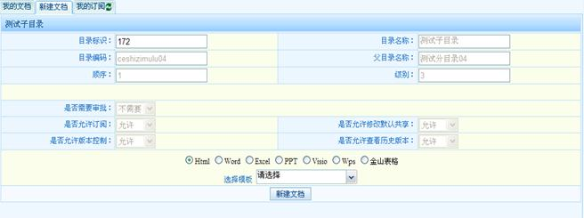
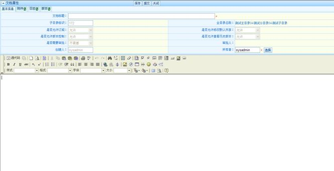
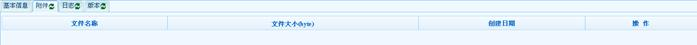
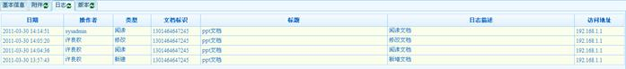
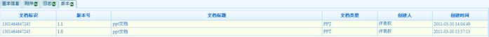

| 5.2.2 新建文档 |
新建文档，必须先选择文档类型 html,word,excel,ppt,visio,wps,金山表格,模板为可选项。

新建文档界面

文档编辑界面
文档属性的基本信息、附件、日志、版本可以通过tab页进行查看。

文档附件查看

文档日志查看

文档版本控制查看
文档版本号从1.0开始，每产生一个版本加0.1，点击版本号可以查看历史版本。
如果该文档对应的子目录为需要审批，则要选择审批人。审批人审批通过后，该文档处于发布状态。